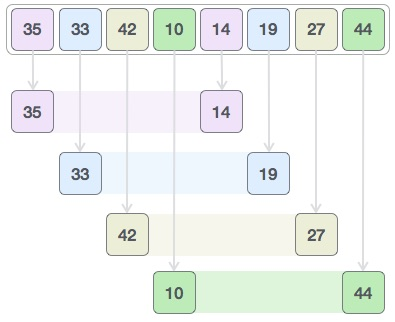
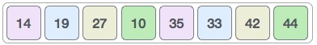
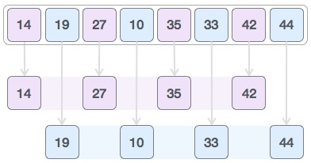
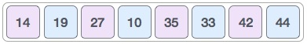
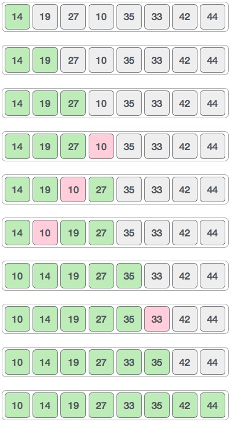

Shell sort is a highly efficient sorting algorithm and is based on insertion sort algorithm. This algorithm avoids large shifts as in case of insertion sort if smaller value is very far right and have to move to far left.
This algorithm uses insertion sort on widely spread elements first to sort them and then sorts the less widely spaced elements. This spacing is termed as interval. This interval is calculated based on Knuth's formula as −
h = h * 3 + 1 where − h is interval with initial value 1
This algorithm is quite efficient for medium sized data sets as its average and worst case complexity are of O(n) where n are no. of items.
We take the below example to have an idea, how shell sort works? We take the same array we have used in our previous examples. For our example and ease of understanding we take the interval of 4. And make a virtual sublist of all values located at the interval of 4 positions. Here these values are {35, 14}, {33, 19}, {42, 27} and {10, 14}
We compare values in each sub-list and swap them (if necessary) in the original array. After this step, new array should look like this −
Then we take interval of 2 and this gap generates two sublists - {14, 27, 35, 42}, {19, 10, 33, 44}
We compare and swap the values, if required, in the original array. After this step, this array should look like this −
And finally, we sort the rest of the array using interval of value 1. Shell sort uses insertion sort to sort the array. The step by step depiction is shown below −
We see that it required only four swaps to sort the rest of the array.
We shall now see the algorithm for shell sort.
Step 1 − Initialize the value of h Step 2 − Divide the list into smaller sub-list of equal interval h Step 3 − Sort these sub-lists using insertion sort Step 3 − Repeat until complete list is sorted
We shall now see the pseudocode for shell sort.
procedure shellSort()
A : array of items
/* calculate interval*/
while interval < A.length /3 do:
interval = interval * 3 + 1
end while
while interval > 0 do:
for outer = interval; outer < A.length; outer ++ do:
/* select value to be inserted */
valueToInsert = A[outer]
inner = outer;
/*shift element towards right*/
while inner > interval -1 && A[inner - interval] >= valueToInsert do:
A[inner] = A[inner - interval]
inner = inner - interval
end while
/* insert the number at hole position */
A[inner] = valueToInsert
end for
/* calculate interval*/
interval = (interval -1) /3;
end while
end procedure
To see shell sort implementation in C programming language, please click here.